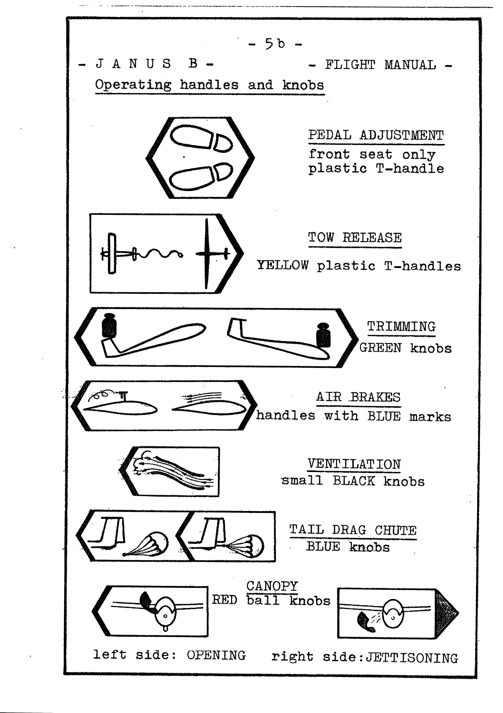
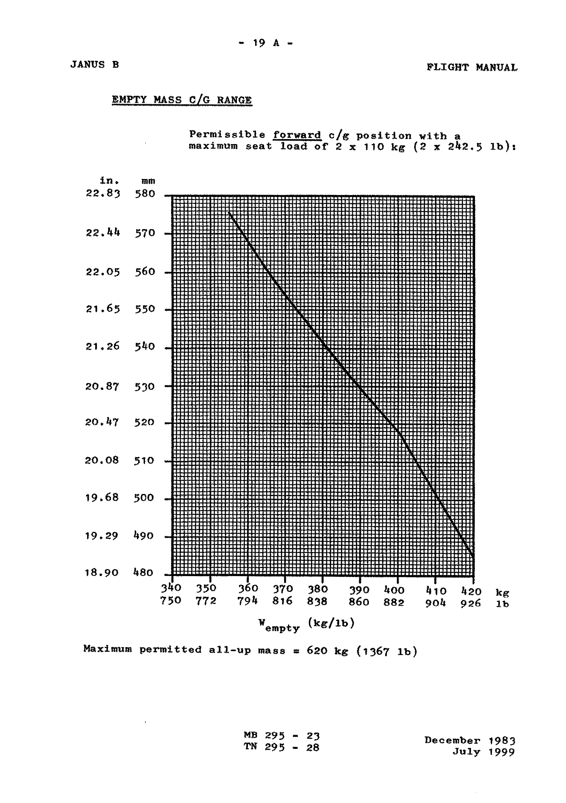
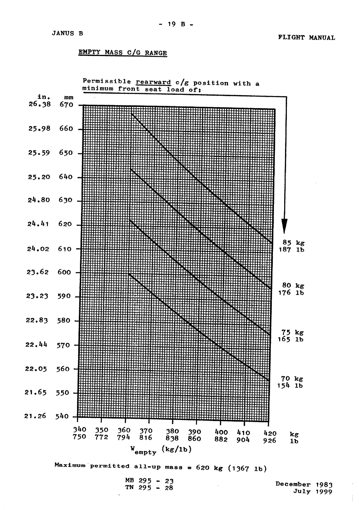
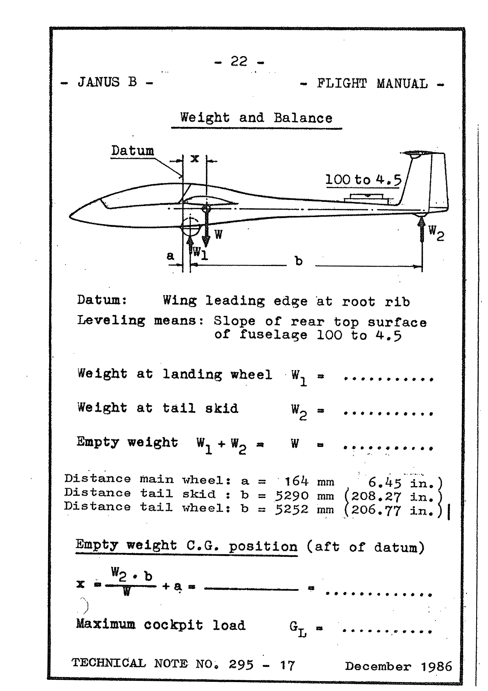
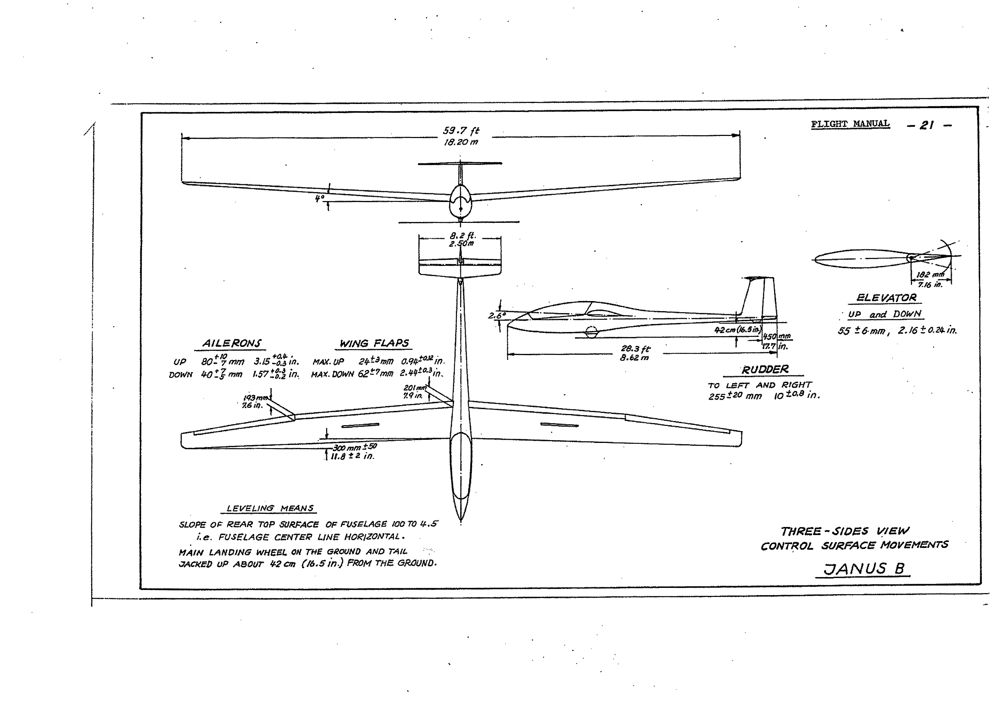

Dane eksploatacyjne i ograniczenia
Szybowiec Janus B to dwumiejscowy szybowiec klasy standard, zaprojektowany i wyprodukowany przez firmę Schempp-Hirth w Kirchheim-Teck (Niemcy Zachodnie). Wydanie oryginalne podręcznika: marzec 1978. Konstrukcja posiada certyfikat kategorii NORMAL (N) wg LFS i jest dopuszczona do lotów w chmurach oraz ograniczonej akrobacji.
Ograniczenia prędkości
| Ograniczenie | km/h | mph | węzły |
|---|---|---|---|
| VNE — szybowanie / nurkowanie | 220 | 137 | 119 |
| Max. prędkość w burzliwej atmosferze | 220 | 137 | 119 |
| VM — prędkość manewrowa | 170 | 105 | 92 |
| Holowanie za samolotem | 170 | 105 | 92 |
| Holowanie za wyciągarką | 120 | 75 | 65 |
| Z otwartymi hamulcami aero. | 220 | 137 | 119 |
| Klapy w pozycji L | 140 | 87 | 76 |
| Klapy +8, 0, −4, −7 | 220 | 137 | 119 |
Oznaczenie prędkościomierza
Skala prędkościomierza posiada następujące oznaczenia kolorystyczne:
Prędkość 1,1 VS1
Wartość 1,1-krotnej prędkości przeciągnięcia wynosi 75 km/h (46 mph / 40 kn) i dotyczy konfiguracji bazowej: klapy w pozycji „L", hamulce schowane, masa max. 620 kg.
Oznaczenia i elementy sterowania w kokpicie
Każdy element sterowania posiada unikatowe oznaczenie kolorystyczne i kształt uchwytu, co ułatwia identyfikację w trakcie lotu — również dotykowo.

Instrukcje operacyjne
Start za wyciągarką
Maksymalna prędkość holowania: 120 km/h (75 mph, 65 węzłów).
Klapy: pozycja +8°.
Szybowiec posiada jeden hak holowniczy na spodzie kadłuba, tuż przed głównym kołem. W normalnych warunkach start za wyciągarką odbywa się bez trudności — brak tendencji do koziołkowania.
Przy dwóch ciężkich pilotach szybowiec stoi na kółku przednim i kole głównym. Rozbieg należy rozpocząć z drążkiem ściągniętym do tyłu, stopniowo odpuszczając go do przodu aż kółko przednie uniesie się od ziemi.
Przy normalnym położeniu C.G. rozbieg powinien odbywać się z drążkiem w pozycji neutralnej.
Przy bardzo lekkich pilotach zalecane jest rozpoczęcie rozbiegu z drążkiem pochylonym do przodu.
Start za samolotem (aeroholowanie)
Maksymalna prędkość holowania: 170 km/h (105 mph, 92 węzły).
Klapy: pozycja 0° lub +8°. Do holowania za samolotem używany jest hak w nosie kadłuba.
Procedura: rozpocznij rozbieg z klapami na 0°, po uniesieniu przełóż na +8° i nabieraj wysokość. Przy prędkości holowania 130–170 km/h klapy z powrotem na 0°.
Prędkość startu
Prędkość oderwania wynosi 70–90 km/h (38–48 węzłów), w zależności od obciążenia skrzydła i pozycji klap.
Odpięcie liny
Pociągnij uchwyt wyzwalacza całkowicie do tyłu. Mechanizm odpięcia działa za pomocą linki połączonej z żółtym uchwytem T:
• Fotel przedni: po lewej stronie drążka.
• Fotel tylny: po lewej stronie panelu przyrządów.
Regulacja pedałów (fotel przedni)
Regulacja odbywa się za pomocą linki Bowdena sterowanej plastikowym uchwytem T po prawej stronie drążka sterowego.
Do tyłu: pociągnij uchwyt i przesuń pedały piętami.
Do przodu: lekko pociągnij uchwyt do tyłu, aby odblokować mechanizm, potem zepchnij pedały piętami do przodu i zablokuj (słyszalny klik).
Trymer podłużny
Trymer sprężynowy (zielone pokrętło po lewej stronie fotela) jest płynnie regulowany. Przy średnim położeniu C.G. szybowiec daje się wytrymować do lotu ustalonego w zakresie prędkości 75–200 km/h.
Podejście i lądowanie (klapy „L")
Podejście wykonuje się przy prędkości 90–100 km/h (48–54 węzły), w zależności od obciążenia skrzydła.
Hamulce aerodynamiczne wypuszczane są płynnie i działają bardzo skutecznie. Ślizg boczny jest łatwo kontrolowalny i może służyć jako dodatkowa pomoc przy lądowaniu — również z wypuszczonymi hamulcami.
Szybowiec osiada na kole głównym i płozie ogonowej (lub kółku) jednocześnie. Hamulec koła (bębnowy) działa dobrze — uruchamiany uchwytem na drążkach sterowych.
Spadochron hamujący
Uchwyt z niebieskim pokrętłem znajduje się po prawej stronie kokpitu, gdzie siedzenie mocowane jest do kadłuba. Obsługiwać prawą ręką.
Wypuszczenie: pchnij uchwyt do przodu wzdłuż szczeliny prowadzącej do środkowego ogranicznika.
Zrzucenie: dalsze przesunięcie uchwytu do przedniego ogranicznika.
Osiągi w locie
Dane dotyczą lotu dwumiejscowego przy obciążeniu skrzydła W/S = 36,5 kp/m².
Lot kołowy (krążenie)
Przy ściąganiu drążka do tyłu w kręgu odczuwalny jest wyraźny wzrost sił na drążku. Przeciwlotka potrzebna jest dopiero przy mocniejszych przechyłach (ze względu na różnicowe wychylenie lotek).
Ster kierunku jest bardzo skuteczny i w locie kołowym powinien być utrzymywany niemal w pozycji neutralnej. Przejście z kręgu 45° do przechyłu 90° wymaga pełnego wychylenia steru kierunku i lotek. Czas tego manewru przy klapach +8° i prędkości 100 km/h wynosi ok. 5 sekund.
Klapy skrzydłowe
Klapy służą do optymalnego dopasowania profilu laminarnego skrzydła do aktualnej prędkości lotu. Ponieważ zakresy laminarności poszczególnych ustawień wzajemnie się pokrywają, dopuszczalne jest stosowanie następujących konfiguracji:
Lądowanie
termiczne
doskonałość
kominami
wysoka prędkość
| Zastosowanie | Klapy | Prędkość km/h | mph | węzły |
|---|---|---|---|---|
| Podejście i lądowanie | L | 80–110 | 50–68 | 43–59 |
| Krążenie termiczne | +8° | 80–100 | 50–62 | 43–54 |
| Najlepsza doskonałość | 0° | 90–140 | 56–87 | 49–76 |
| Przelot między kominami | −4° | 120–160 | 75–99 | 65–86 |
| Lot szybki | −7° | 150–220 | 93–137 | 81–119 |
Charakterystyka przeciągnięcia
Przeciągnięcie w locie prostym
W zależności od obciążenia skrzydła i pozycji klap, ostrzeżenie o przeciągnięciu pojawia się przy prędkości 65–85 km/h (35–46 kn) w postaci lekkiego drżenia statecznika poziomego oraz „luźnych" lotek.
Łagodne dalsze ściąganie drążka powoduje przeciągnięcie szybowca. Gwałtowne ściągnięcie lub turbulencja mogą spowodować opuszczenie nosa lub przechył na skrzydło (zależnie od pozycji powierzchni sterowych). Prędkość po przeciągnięciu narasta bardzo szybko.
Przeciągnięcie w kręgu
Ściąganie drążka w kręgu wymaga narastającej kompensacji przeciwlotką i sterem kierunku (przeciw obrotowi). W pełnym przeciągnięciu szybowiec opuszcza nos w stronę dolnego skrzydła. Wyprowadzenie: odpuść drążek do przodu — lot ustabilizowany przywracany jest za pomocą przeciwsteru i przeciwlotki.
Zachowanie przy dużych prędkościach
Pomijając wysokie siły na drążku, sterowanie przy dużych prędkościach jest łatwe. Należy unikać gwałtownych ruchów sterami. Przy locie w turbulentnym powietrzu na dużej prędkości — upewnij się, że pasy bezpieczeństwa są mocno zapięte i trzymaj drążek pewnie.
Sytuacje awaryjne
Korkociąg — wyprowadzenie metodą standardową
Szybowiec można utrzymać w konfiguracji przeciągnięcia z pełnym ściągnięciem drążka i niezbędną korekcją steru kierunku. Wychylenie pełnego steru kierunku przy przeciągnięciu wprowadza szybowiec w korkociąg. Utrata wysokości: 80–100 m na pełny obrót.
Lot w deszczu / oblodzenie
Lot w deszczu lub z oblodzonymi skrzydłami powoduje znaczną utratę osiągów. Prędkość minimalna może wzrosnąć o ok. 15 km/h. Zachowaj ostrożność przy lądowaniu! Prędkość podejścia: 100–110 km/h (54–59 kn).
Awaryjne opuszczenie kokpitu
Przestronne i dobrze wyprofilowane kokpity gwarantują szybkie i bezpieczne opuszczenie szybowca w sytuacji awaryjnej.
Procedura zrzutu osłony:
Akrobacja (ograniczona)
| Manewr | Klapy | Prędkość wejścia | Prędkość wyjścia |
|---|---|---|---|
| Pętla wewnętrzna | −7° | 180 (200*) km/h | 160 (175) km/h |
| Zakręty przeciągnięciowe | −7° | 180 (200*) km/h | ~140 km/h |
| Korkociąg | +8° | Ostre przeciąg. | 140–160 km/h |
| Leniwa ósemka | −7° | 180–200 km/h | 160–180 km/h |
* W nawiasach wartości dla wyższego obciążenia skrzydła (lot dwumiejscowy). Korkociąg możliwy wyłącznie przy tylnym położeniu C.G.
Lot w chmurach
Szybowiec posiada dostateczną wytrzymałość i stateczność do lotu w chmurach. Należy jednak przestrzegać następujących zasad:
a) Bezwzględnie unikaj skrajnych prędkości. Zasadą jest wypuszczanie hamulców aerodynamicznych już przy prędkości ok. 150 km/h (81 kn).
b) Lot w chmurach dozwolony jest wyłącznie po zainstalowaniu wymaganych przyrządów:
1. Prędkościomierz 2. Wysokościomierz 3. Zakrętomierz 4. Wariometr 5. Kompas magnetyczny
Zalecane dodatkowo: sztuczny horyzont, zegar, akcelerometr, radio.
c) Przestrzegaj obowiązujących przepisów dotyczących lotu w chmurach.
Pozycja środka ciężkości (C.G.)
Zakres C.G. w locie
Datum (odniesienie): krawędź natarcia skrzydła przy żebrze nasadowym.
Wypoziomowanie: nachylenie górnej tylnej powierzchni kadłuba 100 do 4,5 — ogon w dół.
Max. przedni C.G.: 70 mm (2,75 cala) za datum.
Max. tylny C.G.: 300 mm (11,81 cala) za datum.
Obciążenie foteli
| Parametr | kg | lb |
|---|---|---|
| Max. obciążenie fotela przedniego (pilot + spadochron) | 110 | 243 |
| Max. obciążenie fotela tylnego | 110 | 243 |
| Min. obciążenie fotela przedniego | 70 | 154 |
| Min. obciążenie fotela tylnego | bez ograniczeń | |
Jeżeli obciążenie fotela przedniego jest mniejsze niż 70 kg, należy je uzupełnić płytami balastowymi montowanymi na uchwycie przy kole przednim. Producent dostarcza trzy ołowiane płyty (po ok. 3,65 kg każda). Liczba wymaganych płyt zależy od wielkości redukcji obciążenia: 5 kg → 1 płyta, 10 kg → 2 płyty, 15 kg → 3 płyty.
Wykresy zakresu C.G. masy pustej


Pozycja pilotów
Fotel przedni: 1300 mm (51,18 cala) przed datum.
Fotel tylny: 190 mm (7,48 cala) przed datum.
Przedział bagażowy
Na półce montażowej zainstalowanej nad kołem głównym można zamocować sprzęt o masie max. 25 kg. Komora bagażowa za dźwigarami służy do przechowywania butli tlenowych, termosów z wariometrem, lekkiego bagażu itp. Max. ładunek ruchomy: 5 kg. Ramię momentu bagażu: 1100 mm za datum.
Ważenie i wyważenie
Szybowiec musi być ważony co najmniej raz na 4 lata, a także po naprawach konstrukcyjnych, po dodaniu wyposażenia lub po nowym lakierowaniu.
Datum: krawędź natarcia skrzydła przy żebrze nasadowym.
Odległość koła głównego od datum: a = 164 mm (6,45 cala)
Odległość płozy ogonowej od datum: b = 5290 mm (208,27 cala)
Odległość kółka ogonowego od datum: b = 5252 mm (206,77 cala)
Wzór na położenie C.G.: x = (W₂ × b / W) + a
Gdzie: W₁ = masa na kole głównym, W₂ = masa na płozie/kółku ogonowym, W = W₁ + W₂

Ustawienie skrzydła i usterzenia
| Parametr | Wartość | Odniesienie |
|---|---|---|
| Kąt zabudowy skrzydła | 2,6° | Oś podłużna kadłuba (tylna) |
| Kąt zabudowy usterzenia | 0° | Oś podłużna kadłuba (tylna) |
Ograniczniki wychyleń sterów
| Powierzchnia | Typ ogranicznika |
|---|---|
| Ster kierunku | Regulowane ograniczniki na tylnej ramie kadłuba + stałe ograniczniki przy dolnym zawiasie |
| Ster wysokości | Regulowane ograniczniki na drążkach i ich grodzicach (śruby nastawne) |
| Lotki | Regulowane ograniczniki na drążkach, stałe ograniczniki w skrzydle |
| Klapy skrzydłowe | Urządzenie blokujące w kokpicie |
| Hamulce aero. | Stałe ograniczniki na uchwytach w kokpicie i na ramie stalowej kadłuba |
Wymiary i wychylenia sterów

Dane z rysunku trzy-rzutowego (str. 21 oryginału):
Wychylenia powierzchni sterowych
| Powierzchnia | Do góry | W dół |
|---|---|---|
| Lotki | 80 +10/−0 mm (3,15 +0,4 cala) | 40 +5/−7 mm (1,57 +0,2 cala) |
| Klapy skrzydłowe | 24 ±3 mm (0,94 ±0,12 cala) | 62 ±7 mm (2,44 ±0,3 cala) |
| Ster wysokości | 55 ±6 mm (2,16 ±0,24 cala) — w górę i w dół | |
| Ster kierunku | 255 ±20 mm (10 ±0,8 cala) — w lewo i w prawo | |
Checklista
A) Po montażu
- Czy uchwyt sworznia głównego jest zabezpieczony zawleczką cowlingu?
- Czy popychacze lotek, klap i hamulców są prawidłowo połączone kulkowymi złączami sprężynowymi i sprawdzone?
- Czy połączenia skrzydło–kadłub i otwór na rygiel usterzenia poziomego są uszczelnione?
- Czy mechanizm wyzwalacza holowniczego działa prawidłowo?
- Czy hamulec koła działa prawidłowo?
- Czy sprawdzono ciśnienie w oponach? Koło główne: 2,75 bar (39 psi), kółko przednie: 1,5 bar (21 psi), kółko ogonowe: 2,5 bar (36 psi).
- Czy usterzenie poziome jest pewnie zamocowane?
B) Przed startem
- Czy powierzchnie sterowe poruszają się swobodnie, do pełnych wychyleń, we właściwym kierunku?
- Czy hamulce aerodynamiczne działają prawidłowo? Czy po sprawdzeniu są zablokowane?
- Czy uchwyt spadochronu hamującego jest zaryglowany w tylnym położeniu?
- Czy klapy są w prawidłowej pozycji startowej?
- Czy osłona jest zamknięta i zaryglowana? Czerwone pokrętła po obu stronach muszą być w pozycji przedniej.
- Czy spadochron pilota jest prawidłowo zapięty?
- Czy pasy bezpieczeństwa są założone i zaciągnięte?
- Czy wysokościomierz jest ustawiony na odpowiednią wysokość lub QNH/QFE?
- Czy częstotliwość radiowa jest ustawiona na lotnisko / kontrolę lotów?
C) Po starcie
- Sprawdź trymer.
Wyposażenie minimalne
a) Przyrządy i wyposażenie obowiązkowe
Prędkościomierz 250 km/h (160 mph / 140 kn), wysokościomierz, czteropunktowe pasy bezpieczeństwa, poduszka lub spadochron ratunkowy.
b) Dokumenty obowiązkowe
Podręcznik Lotu i Obsługi, tabliczki z ograniczeniami eksploatacyjnymi.
Kalibracja prędkościomierza
Wlot ciśnienia dynamicznego: nos kadłuba, górna krawędź otworu wlotowego.
Wlot ciśnienia statycznego: rama kokpitu, ok. 6 cm (2 3/8 cala) przed panelem przyrządów (fotel przedni). Wysokościomierz: tył kadłuba, ok. 1,2 m (47 cali) przed płaszczyzną usterzenia pionowego.
Tablica korekty (EAS → IAS)
Przy gęstości powietrza ρ₀ = 0,125 kgs²/m⁴:
| V(EAS) km/h | V'(IAS) km/h | V(EAS) mph | V'(IAS) mph | V(EAS) kn | V'(IAS) kn |
|---|---|---|---|---|---|
| 70 | 69 | 45 | 44.7 | 38 | 37.8 |
| 80 | 80 | 50 | 50 | 40 | 40 |
| 90 | 90 | 60 | 60 | 50 | 50 |
| 100 | 100 | 70 | 68.3 | 60 | 59.4 |
| 110 | 108 | 80 | 78.3 | 70 | 68.6 |
| 120 | 117 | 90 | 88.8 | 80 | 78.8 |
| 140 | 138 | 90 | 88.8 | 80 | 78.8 |
| 160 | 158 | 100 | 98.8 | 90 | 88.7 |
| 180 | 177 | 110 | 108.1 | 100 | 98.4 |
| 200 | 198 | 120 | 118.3 | 110 | 108.8 |
Dane dodatkowe
Krzywa biegunowa (polara prędkościowa)
Zmierzona biegunowa prędkościowa szybowca Janus B. Obwiednia krzywych pokazuje optymalny dobór klap dla każdej prędkości. Najlepsza doskonałość 39,5 przy 110 km/h (lot dwumiejscowy, W/S = 36,5 kp/m²). Krzywe przerywane — lot jednomiejscowy (W/S = 30,5 kp/m²).